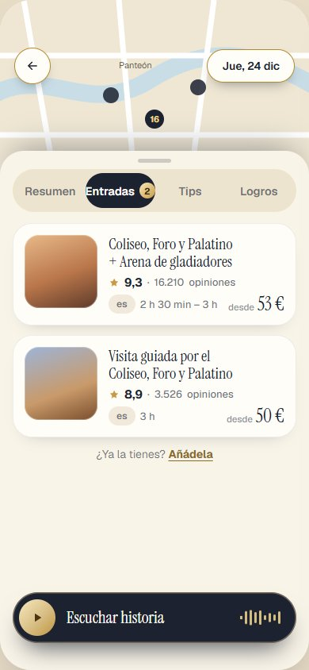
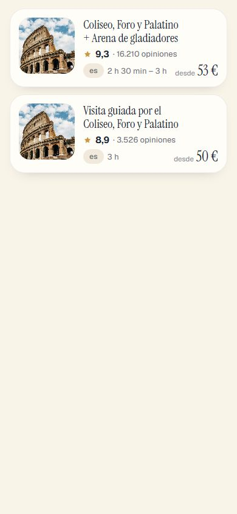
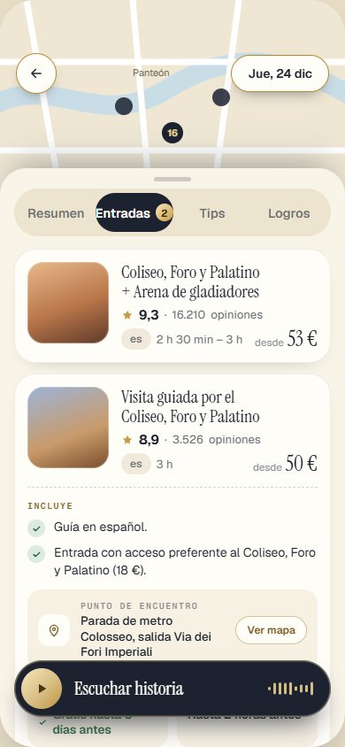
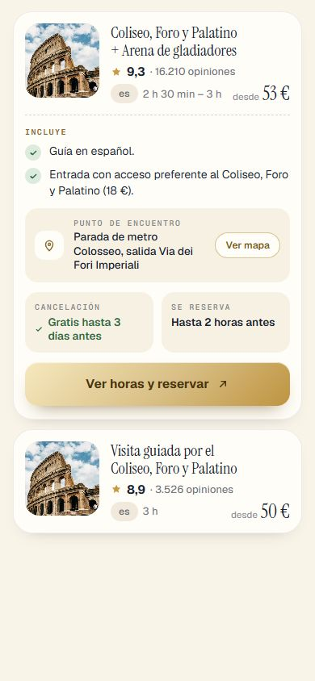

V40D · La pestaña «Entradas» como Design y el diamante del Vaticano
1 · La pestaña «Entradas» de la ficha
El diseño usado:Entradas Ficha Pestana.dc.html del entradas.zip de hoy (23-nov, 13:51; no había otro más viejo en Descargas). Es la pantalla «APP · FICHA DEL LUGAR · PESTAÑA ENTRADAS» con las dos tablas: las entradas cerradas (F1) y una abierta (F2).
Tarjeta cerrada: foto a la izquierda con esquinas redondas (18 px), título en letra de titular, ★ dorada con la nota y «· N opiniones», en la misma fila la etiqueta del idioma («es») y la duración, y a la derecha «desde» pequeño y el precio grande.
Tarjeta abierta, bajo una línea de puntos: «INCLUYE» (pequeño y dorado) con cada cosa con su ✓ verde en un círculo; el punto de encuentro en su cajita con el pin y [Ver mapa]; dos cajitas juntas, CANCELACIÓN (en verde con ✓ cuando es gratis: «Gratis hasta 3 días antes», sacado del dato de la cancelación) y SE RESERVA («Hasta 2 horas antes»); y debajo [Ver horas y reservar], dorado, como hoy.
«¿Ya la tienes? Añádela» con «Añádela» dorado, en negrita y subrayado, como en el diseño.
El reproductor «Escuchar historia»: píldora oscura, botón de play dorado (degradado) y las ondas doradas a la derecha (se mueven mientras lee; quietas con «Reducir movimiento»). Se quitó la barra de progreso fina de debajo, que no está en el diseño.
Los datos son los de Civitatis, tal como vienen (idioma, duración, nota, opiniones, precio, qué incluye, punto de encuentro, cancelación y cuándo se reserva). Funciona igual para todos los sitios con entradas de todos los destinos (es la misma pieza). Lo que el dato no trae no sale.
Lo que ya no sale (porque el diseño no lo tiene): la lista «No incluye» y las dos etiquetas pequeñas («Cancelación gratis», «Con audioguía»): la cancelación gratis ahora se ve en su cajita verde.
Design y la app, lado a lado (390 × 844)

Design · cerradas

App · cerradas

Design · una abierta

App · una abierta (el Coliseo, con datos de ejemplo de Civitatis)
2 · El diamante del Vaticano
Ya estaba hecho en la V40C: vuelve a llamarse «El Vaticano es tuyo» en todos los sitios donde lo cambié en la V40B, y los ejemplos usan «Roma en el corazón». Aquí no se ha tocado nada más; pruebaV40D lo vuelve a comprobar (solo el Vaticano lleva «… es tuyo»; los destinos, ninguno).
La prueba
pruebaV40D (19 comprobaciones): la pestaña Entradas del Coliseo, cerrada y abierta, con todo lo de arriba (nota, opiniones, idioma, duración, precio, «Incluye», punto de encuentro, las dos cajitas y [Ver horas y reservar]); «Añádela» y el reproductor; el diamante del Vaticano y ningún grado de los destinos «… es tuyo/a».
pruebaV23_entradas actualizada al diseño nuevo (los textos «INCLUYE», «PUNTO DE ENCUENTRO», «CANCELACIÓN»…). pruebaV40B, pruebaJutrip y las de las fichas y las entradas (6y2, 6y4, 6y6, 6y7, 10N4, 10N10, 10N11) en 0, salvo lo que se dice en PARA ERIC.
Tu lista de comprobación de esta tanda
Abre la ficha del Coliseo › Entradas: las tarjetas cerradas se ven como en Design (foto, ★, «es», duración, «desde» y el precio grande).
Toca una: aparece «INCLUYE» con sus ✓ verdes, el punto de encuentro con [Ver mapa], CANCELACIÓN en verde y SE RESERVA, y [Ver horas y reservar].
Abajo de la ficha, «Escuchar historia»: play dorado y ondas a la derecha.
PARA ERIC
El idioma sale como código de dos letras («es», «en»…) de lo que dice Civitatis; si una entrada no trae idioma, no sale la etiqueta.
No he podido sacar capturas de las tarjetas con datos reales de Civitatis (la API de consulta está apagada en el entorno de pruebas): las capturas llevan una entrada del Coliseo de ejemplo con los textos del diseño.
Reiniciado el api-server al final de la tanda. No se ha apagado el PC.